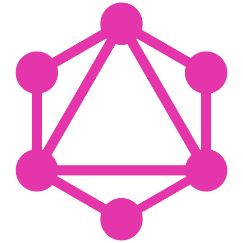

Cycling Workflow Orchestration:
the Cylc Workflow Engine
Hilary Oliver
NIWA
| Why Cylc? | |
| What's new? (Cylc 8) | |
| Cylc 8 preview demo |


|
Website https://cylc.org |
|
|
Developer chat and VC https://riot.im/app/#/group/+cylc:matrix.org |
|
|
User discussion forum cylc.discourse.group |
|
|
Code & development hub https://github.com/cylc |

 research
research
 real-time
real-time
cycling
seamless
(meta-scheduling)
transition
simulated
time
cycling
operations

| Production ready | |
| Cycling: date-time & arbitrary | |
| Job retry on failure | |
| Restart from checkpoint | |
| Distributed architecture |
| Live monitoring | |
| Manual intervention | |
| Simulation mode | |
| External triggering | |
| Open Source GPLv3 |
Modest workflows are easy!

Efficient programmatic generation of large and complex workflows
| Task config inheritance | |
| Task parameter expansion | |
| General Pythonic templating |
System architecture
 since Jan 2014
since Jan 2014
- research and production
- demonstrated scaling to:
- ˜1000s of recurrences
- ˜10,000s of tasks
- ˜100,000s of dependencies
- ~all workload for HPCs:
- 460,672 cores
- 15,600 TFLOPs peak performance
The road to
Cylc 8!
Cylc 7 Architecture
- local(ish) client/server
- all clients equal (incl. jobs)
- all runs as the user
- auto owner-only authentication
- owner/public authorization
- https network layer REST API
- details
cylc-7.8.4 - current stable production system
Cylc 8 Architecture

| Single point of access | |
| Integrate with site ID management | |
In-browser UI, with:
|
|
| Fine-grained authorization in WFS | |
| Retire suite-specific passphrase |
|
Scheduling & runtime |
2
|
⟶ |
3
|
|
Data & network layer |
|
⟶ |

& Protocol Buffers |
|
Web framework |
|
⟶ |
|
|
Front-end |
|
⟶ |

|
|
Documentation |
|
⟶ |
|
Cylc Packaging
- Cylc 7
- Download & unpack relase tarball (Cylc and several bundled libraries)
- Install all dependencies (good luck!)
- Cylc 8
- (
pip install cylc-flow) - (
pip install cylc-uiserver) -
conda install cylc
- (
Cylc 8 Workflow Services
Server program & CLI. Mostly unchanged, but:
- Python 3!
- ZMQ network layer
- No direct UI service
- Incremental update to UI Server
- No load from multiple UIs
Cylc 8 UI Servers
Serves the UI to the browser, and:
- Collates data from user WFs
- Takes the load off of WFs
- Pluggable sub-services
- presents stopped WFs etc. too!
- Tornado server
- to UI: GraphQL by WebSocket
- to WFS: ProtoBuf by ZMQ
- details
Cylc 8 Hub
- single point of access
- site identity management
- spawn and proxy UI Servers
- local and remote spawners
- stores session information
- details
Cylc 8 UI
Javascript with Vue.js
- unified (
cylc gui, gscan) - dash board
- responsive design
- simplified set of task states
- (n=1,2,3 window?)
- shared data-store with incremental update